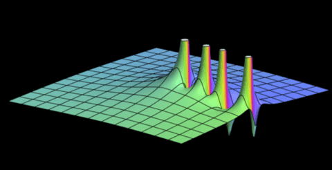

없다.
일상생활에선 바뀌는게 사실상 제로다.

왜냐하면 우리가 쓰는 시스템은
리만가설이 참인걸 전제로 둔 시스템이라서
이게 ㄹㅇ 참인걸 증명한다고 달라지는건 없기 때문임
수학적으론 애미씨발존나 큰 발견이지만
싱붕이한테 직접적인 영향은 없을 예정

없다.
일상생활에선 바뀌는게 사실상 제로다.

왜냐하면 우리가 쓰는 시스템은
리만가설이 참인걸 전제로 둔 시스템이라서
이게 ㄹㅇ 참인걸 증명한다고 달라지는건 없기 때문임
수학적으론 애미씨발존나 큰 발견이지만
싱붕이한테 직접적인 영향은 없을 예정
댓글
수집 당시 댓글 111개
ㅇㅇ · 11.21 08:40:23
· ㅇㅇ · 11.21 09:30:16
윾희왕딱지가딱좋아 · 11.21 08:42:38
· ㅇㅇ · 11.21 11:29:41
ㅇㅇ · 11.21 08:45:12
· ㅇㅇ · 11.21 09:12:06
· ㅇㅇ · 11.21 09:18:12
· 백석행 · 11.21 11:48:45
· 모하메드압두르후세인 · 11.21 11:57:36
· 노은지 · 11.21 12:01:01
산와머니 · 11.21 08:55:06
ㅇㅇ · 11.21 09:00:42
· ㅇㅇ · 11.21 09:05:10
· ㅇㅇ · 11.21 09:08:28
· 응룡 · 11.21 09:16:20
· ㅇㅇ · 11.21 09:45:12
· ㅇㅇ · 11.21 09:46:03
· ㅇㅇ · 11.21 09:46:58
· 내타믕 · 11.21 09:50:58
· ㅇㅇ · 11.21 10:08:49
· ㅇㅇ · 11.21 10:09:52
· ㅇㅇ · 11.21 10:11:54
· ㅇㅇ · 11.21 10:52:31
· ㅇㅇ · 11.21 10:55:18
· ㅇㅇ · 11.21 11:08:02
· 가자미 · 11.21 11:09:04
· 모하메드압두르후세인 · 11.21 12:02:31
· ㅇㅇ · 11.21 12:02:35
· ㅇㅇ · 11.21 12:04:41
· ㅇㅇ · 11.21 12:04:53
· ㅇㅇ · 11.21 12:04:56
· ㅇㅇ · 11.21 12:06:45
페코미코멧 · 11.21 09:04:14
· 실베현자 · 11.21 11:59:36
ㅇㅇ · 11.21 09:05:02
ㅇㅇㅇㅇㅇ · 11.21 09:08:33
· ㅇㅇ · 11.21 09:16:30
· 고로시아 · 11.21 09:47:41
· ㅇㅇ · 11.21 12:00:01
· 실베현자 · 11.21 12:00:03
· ㅇㅇ · 11.21 12:05:38
ㅇㅇ · 11.21 09:20:30
· 케떡 · 11.21 11:59:44
· 실베현자 · 11.21 12:01:19
· 실베현자 · 11.21 12:02:06
hobanhoney · 11.21 09:26:06
버거의맛을알아버렸어 · 11.21 09:28:00
ㅇㅇ · 11.21 09:29:29
· ㅇㅇ · 11.21 09:32:15
· 실베현자 · 11.21 12:02:56
· 실베현자 · 11.21 12:03:21
하무열 · 11.21 09:57:50
ㅇㅇ · 11.21 10:08:50
ㅇㅇ · 11.21 10:27:20
· ㅇㅇ · 11.21 10:58:55
ㅇㅇ · 11.21 10:41:16
· ㅇㅇ · 11.21 10:43:58
· ㅇㅇ · 11.21 11:59:51
· ㅇㅇ · 11.21 12:03:11
블랙글레이즈드 · 11.21 10:50:25
달배냥이 · 11.21 11:07:47
람세스 · 11.21 11:44:14
· ㅇㅇ · 11.21 11:59:26
· 모하메드압두르후세인 · 11.21 11:59:41
· ㅇㅇ · 11.21 12:00:36
· 케떡 · 11.21 12:00:55
· ㅇㅇ · 11.21 12:02:55
· ㅇㅇ · 11.21 12:05:21
· ㅇㅇ · 11.21 12:06:43
· 모하메드압두르후세인 · 11.21 12:07:23
모하메드압두르후세인 · 11.21 11:58:40
· 노은지 · 11.21 12:03:10
· 모하메드압두르후세인 · 11.21 12:05:32
· 노은지 · 11.21 12:06:51
· 케떡 · 11.21 12:07:07
ㅇㅇ · 11.21 11:59:25
ㅇㅇ · 11.21 12:00:13
Adriel · 11.21 12:00:25
· Adriel · 11.21 12:00:39
· Adriel · 11.21 12:02:17
· ㅇㅇ · 11.21 12:06:43
ㅇㅇ · 11.21 12:01:30
ㅇㅇ · 11.21 12:01:43
ㅇㅇ · 11.21 12:02:24
· ㅇㅇ · 11.21 12:03:47
· ㅇㅇ · 11.21 12:05:01
ㅇㅇ · 11.21 12:03:31
ㅇㅇ · 11.21 12:03:33
· ㅇㅇ · 11.21 12:04:35
· ㅇㅇ · 11.21 12:05:16
ㅇㅇ · 11.21 12:04:29
· ㅇㅇ · 11.21 12:04:42
· ㅇㅇ · 11.21 12:05:32
· ㅇㅇ · 11.21 12:06:02
ㅇㅇ · 11.21 12:05:25
노은지 · 11.21 12:05:26
ㅇㅇ · 11.21 12:06:50
ㅇㅇ · 11.21 12:07:13
ㅇㅇ · 11.21 12:07:13
ㅇㅇ · 11.21 12:08:01
삭제됨 · 11.21 08:39:33
· ㅇㅇ · 11.21 08:42:01
· 간디귿 · 11.21 08:45:58
· 8==> · 11.21 08:49:15
· 안경음침녀 · 11.21 08:49:42
· 히마리와,지공섭 · 11.21 09:26:59
· ㅇㅇ · 11.21 09:38:46
· 개댇지 · 11.21 09:40:45
· 하카라 · 11.21 10:09:12
· ㅇㅇ · 11.21 10:26:16
ㅇㅇ · 11.21 08:39:40